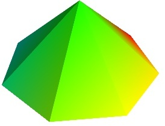

3D Plotting functions for numpy arrays¶
Visualization can be created in mlab by a set of functions operating on numpy arrays.
The mlab plotting functions take numpy arrays as input, describing the x, y, and z coordinates of the data. They build full-blown visualizations: they create the data source, filters if necessary, and add the visualization modules. Their behavior, and thus the visualization created, can be fine-tuned through keyword arguments, similarly to pylab. In addition, they all return the visualization module created, thus visualization can also be modified by changing the attributes of this module.
Note
In this section, we only list the different functions. Each function is described in detail in the MLab reference, at the end of the user guide, with figures and examples. Please follow the links.
0D and 1D data¶
 |
points3d()
Plots glyphs (like points) at the position of the supplied data, described by x, y, z numpy arrays of the same shape. |
 |
plot3d()
Plots line between the supplied data, described by x, y, z 1D numpy arrays of the same length. |
2D data¶
 |
imshow()
View a 2D array as an image. |
 |
surf()
View a 2D array as a carpet plot, with the z axis representation through elevation the value of the array points. |
 |
contour_surf()
View a 2D array as line contours, elevated according to the value of the array points. |
 |
mesh()
Plot a surface described by three 2D arrays, x, y, z giving the coordinates of the data points as a grid. Unlike surf(), the surface is defined by its x, y and z coordinates with no privileged direction. More complex surfaces can be created. |
 |
barchart()
Plot an array s, or a set of points with explicit coordinates arrays, x, y and z, as a bar chart, eg for histograms. This function is very versatile and will accept 2D or 3D arrays, but also clouds of points, to position the bars. |
|  | triangular_mesh()
Plot a triangular mesh, fully specified by x, y and z coordinates of its vertices, and the (n, 3) array of the indices of the triangles. |
{kind=link}
Vertical scale of surf() and contour_surf()
surf() and contour_surf() can be used as 3D representation of 2D data. By default the z-axis is supposed to be in the same units as the x and y axis, but it can be auto-scaled to give a 2/3 aspect ratio. This behavior can be controlled by specifying the “warp_scale=’auto’”.
From data points to surfaces.
Knowing the positions of data points is not enough to define a surface, connectivity information is also required. With the functions surf() and mesh(), this connectivity information is implicitly extracted from the shape of the input arrays: neighboring data points in the 2D input arrays are connected, and the data lies on a grid. With the function triangular_mesh(), connectivity is explicitly specified. Quite often, the connectivity is not regular, but is not known in advance either. The data points lie on a surface, and we want to plot the surface implicitly defined. The delaunay2d filter does the required nearest-neighbor matching, and interpolation, as shown in the (Surface from irregular data example).
3D data¶
 |
contour3d()
Plot iso-surfaces of volumetric data defined as a 3D array. |
 |
quiver3d()
Plot arrows to represent vectors at data points. The x, y, z position are specified by numpy arrays, as well as the u, v, w components of the vectors. |
 |
flow()
Plot a trajectory of particles along a vector field described by three 3D arrays giving the u, v, w components on a grid. |
Structured or unstructured data
contour3d() and flow() require ordered data (to be able to interpolate between the points), whereas quiver3d() works with any set of points. The required structure is detailed in the functions’ documentation.
Note
Many richer visualizations can be created by assembling data sources filters and modules. See the Assembling pipelines with mlab and the Case studies of some visualizations sections.

Table Of Contents
This Page
Google Search
Citing Mayavi
If you publish articles using Mayavi, please cite Mayavi. We need these citations to justify time and resources on the software.